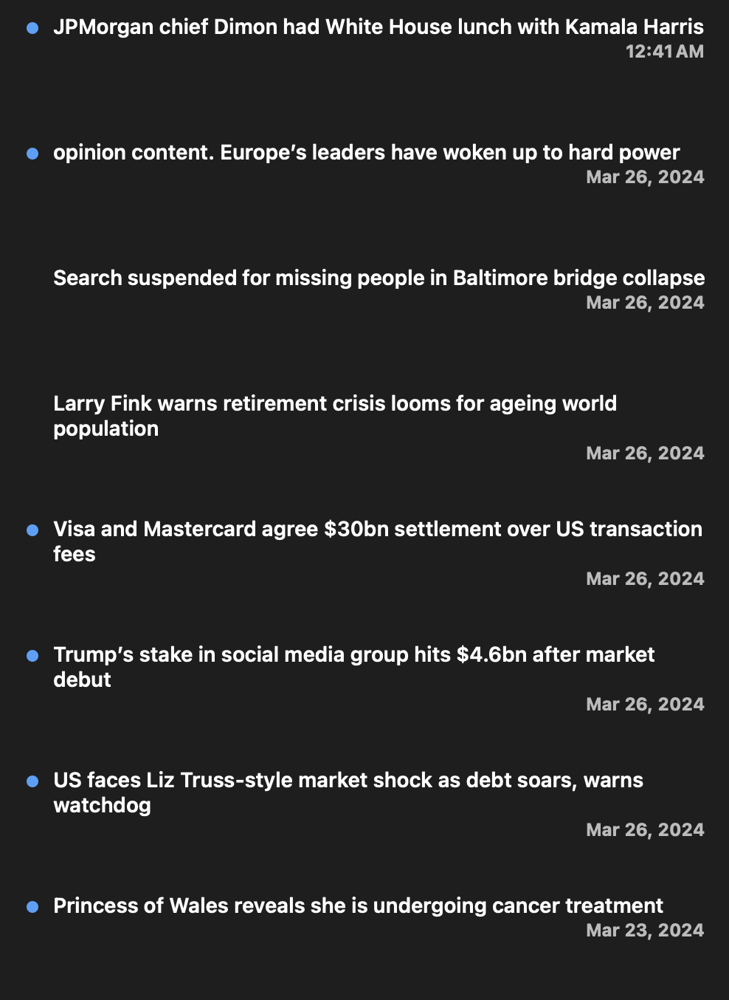

I made this to promote information and avoid distraction. It's valuable to know the direction of society, yet it is too easy to get stuck reading random crap, even if it comes from one of the better newspapers.
Luckily, we can leverage the "Most Read" category of the Financial Times to let others pick out the notable articles for us.
None of the other tools ("pick your own RSS feed using CSS selectors") satisfied me because the RSS feeds they generated spammed my inbox whenever new articles came out.
Basically, each story was represented as a RSS feed item which clogged up my "Today" feed. And it kept coming whenever that section of the website updated. My solution aggregates them so that there is one item with a list of the 5 stories.
This tool updates every 12 hours using a cron job on Github Actions. The delay doesn't matter to me because the news is already yesterday's news.
There's a small issue where my RSS reader (NetNewsWire) replaces only adds a new article if it sees a new rss.xml. I need to find a way where it includes all the past posts in the current rss.xml. Othewise if I don't open the RSS reader for a few days, I miss the previous stories. Simultaneously, I don't want any new user who uses the tool to be spammed with 1000 old stories. So I'm not sure what the best answer is there.